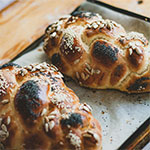
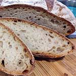
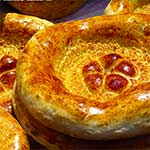

Our braided challah bread is a traditional Jewish bread characterized by its rich, golden-brown crust and soft, slightly sweet interior.

Our French boule is a round, rustic loaf of bread characterized by its chewy crust and soft, airy interior.

Uzbek bread is not just a culinary delight but a cultural treasure that reflects the warmth, generosity, and tradition of Uzbekistan.